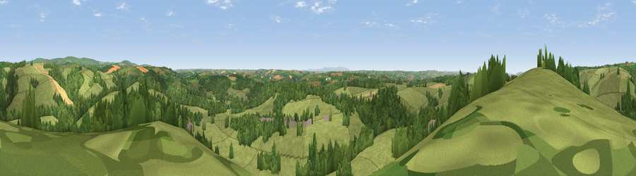

Viewpoint near Filleigh
#13458 in England · top 24% of its area beats it · near FilleighThe view, rendered

A 360° render of this exact spot computed from the terrain model, tree cover and land cover — summer colours, afternoon light, calibrated against photographs of famous viewpoints. Real trees, hedges and buildings will differ in detail.
The panorama
Grey silhouette: terrain skyline in each direction (720 bearings, Earth curvature and refraction included). Dashed green: skyline with trees (+15 m) and buildings (+8 m) as obstacles. Blue strip: how far the ground is visible on each bearing.
Where the view opens
Wedge length = distance to the farthest visible ground on that bearing (vegetation-aware). Rings at 10, 25 and 50 km.
What fills the view
70% grassland · 25% woodland · 4% cropland ·
Angular shares of the visible panorama (visual magnitude), not map area. Landscape diversity 0.33 (0–1 Shannon).
Key numbers
More beautiful places nearby
The staircase of upgrades: each row has a higher view potential than everything closer. Driving times are estimates from straight-line distance, calibrated against real road routing — check an actual route before setting out.
| Place | Direction | Drive | Score |
|---|---|---|---|
| Viewpoint near East Buckland | NNE · 2 km | ~5 min | 61.2 |
| Viewpoint near East Buckland | NE · 2 km | ~6 min | 65.4 |
| Yollacombe Hill | W · 3 km | ~6 min | 70.2 |
| Viewpoint near Landkey | W · 7 km | ~14 min | 74.0 |
| Codden Hill | W · 8 km | ~16 min | 81.3 |
| Viewpoint near Martinhoe | NNW · 19 km | ~33 min | 86.5 |
| Holdstone Hill | NNW · 20 km | ~33 min | 90.2 |
| The Knoll | ESE · 96 km | ~120 min | 91.0 |
51.04186, -3.90671 · source: screening · position refined by local search. Computed location — check access rights before visiting.